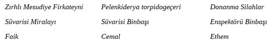

YEDİNCİ BAB
Savaş ilanından önce ateş denemesi- Ateş denemesindeki üzüntülü olaylar- Ateş denemesindeki olaylara ilişkin araştırmalar- Deniz imalatçılarının bilgilerinin yetersizliği yüzünden kızakların hasara uğraması- Top kızaklarındaki hasarları araştırmak üzere Nezaret makamından yapım memuru Ali Paşa ile Kenan Bey’in gönderilişi- Ali Paşa ile Kenan Bey’in topçuluk teknolojisi konusundaki durumları ve bilgileri.
Nisan’ın ikinci günü bütün donanma ile adı geçen denemenin yapılması maksadıyla Nâra Limanı’ndan hareket edildi. Fen Heyeti’nin kararı ile şu not gereğince denenme yapılacaktı:
Mesudiye Firkateyni, Aziziye Firkateyni, Pelenk-i Derya torpidogeçeri. Bunlara bağlı olarak (maiyetinde) Seham ile Şehap torpido istimbotu bulunacaktır.
Osmaniye Firkateyni, Hamidiye Firkateyni, Necm-i Şevket korveti. Bu fırkaya (filola) bağlı olarak Tîr-i Zafer ile Burhanettin torpido istimbotu bulunacaktır.
Kal’a-yı Sultaniye’den çıkarken donanma prova hattı üzerinde çıkacaktı. Böylece prova hattı korunarak Mesudiye’den ateş işareti verildiği anda her gemi açığa doğru ikisi boş biri birinci ota gülle atmak üzere her toptan üçer atım atılacaktır. Bundan sonra öteki borda toplarının da denemesi için seyir yönü değiştirilecektir. Deneme sırasında bir kaza olmadığı takdirdi önceki ateş taliminin bittiği zaman her topun gaye yüksekliği ile bir gülle daha atılacaktır. Her top atan gemi mizana direğine kırmızı sancak çekecek ve ateş sonunda bu bayrağı arya edecek ki, bu da “ateş kes” demek olacaktır. Bir sakatlık ya da engeli ortaya çıkan her gemi gerisinde bulunana “Ben ateş kestim sen toplarını denemeye başla” işaretini vermek için derhal ateş talimi sancağını çekecektir. (77) numarası çekildiği takdirde sancak tarafına manevralar yapılacaktır. Bunun altına kırmızı çekilir ise iskeleye manevra yapılacaktır.
Kal’a-yı Sultaniye’den çıkıldıktan sonra Kumkale önlerinde zırhlı Aziziye Firkateyn-i Hümâyunu’nun donanmayı takip ederek hareketini durduğu görülmekle işaret edilerek kaptandan sorularak makinasında arıza meydana geldiğini cevaplayarak bildirdi. Bir süre sonra arıza giderilerek Bozcaada önlerinde Donanma-yı Hümâyun’a katıldı. Ateş tecrübesine başlandı. Saat sekize kadar deneme sürdü. Sonra İmroz önlerinde savaş örgütlenmesi manevrası yapılarak Boğaz’a girme emri verildi. Çünkü topların aralıklı ve çok ağır denenmesi gemilerin devir dairelerini ve dümen açılarını denemeye meydan vermemiş olduğundan hiç olmazsa bir iki fenn-i harb-i bahri [deniz savaşı tekniği] teşkilatı yapılmak istenmiş idi. Bütün gemiler[in] toplanarak bir prova hattı oluşturmalarını emrettim. Niyetim prova hattından borda hattına geçmek manevrasını yaptırmak idi. Fakat gemilerin süratlerindeki eksiklik ile dümen devir dairelerine ilişkin olan gerekli cetvellerin bulunmayışı ve dümenlerin istenildiği gibi hareket etmemeleri ve daha buna benzer eksiklikler ve sakıncalardan dolayı ancak bir iki saat içinde bir prova oluşturulabilmiş ve bunda da gemiler yerlerini koruyamayarak her iki gemi arasında dört yüz metre ara bulunması savaş teknolojisi düzeni gereğinden iken bu aralıklar sekiz yüz, bin hatta iki üç bin metreye kadar düzensiz bir surette yükselerek bu halde savaş düzenlemesi yapılması imkânsız olduğu anlaşılmış ve gemilerin nizami aralıklarını bu hatta mevkilerini alabilmelerine müsaade için artan sürat ile Boğaz girişine doğru yol verilmiştir ki, girişten on mil kadar açığa donanma maiyeti ile görevli Nüzhet Vapuru’nun donanmaya doğru geldiği görülmüş ve çektiği işarette içinde Alman Fon Paşa olduğu anlaşılmakla durularak Müşarünileyh Hazretleri [kendisi] Mesudiye’ye alındıktan sonra yine yol verilip Boğaz’a girilmiştir. Denemedeki gözlemler ve alınan sonuçlar aşağıdaki yazı ile Bahriye Nezareti’ne bildirilmiştir:
Fi 2 Nisan sene 313 [1897 senesi 2 Nisan’ında] tarih ve otuz bir numaralı yazıları alındı. Deniz kuvvetlemizin kudretini göstermesi ve böyle nazik bir zamanda devletin şerefini korumak hepimizin kutsal bildiği bir görev olduğu bilinmekle ve Donanma-yı Hümâyunu’nun gece ve gündüz çalışılıp gelişme sağlanarak mümkün olduğu kadar süratle düşman karşısına çıkabilmesi hepimizin isteği ise de telgraf emirleri gereğince ateş talimine çıkılarakaşağıdaki üzücü olaylar oluşmuştur. Nâra Limanı’na dönüldükten sonra Fon Hofe ve Hayri Paşalar ile Süvari Beyler ve Komisyon Heyeti [ile] hep birlikte gidilerek her gemi incelendi, gözden geçirildi. Osmaniye Firkateyn-i Hümâyunu’nun on sekiz tondan on altısı tamir ve düzeltilmesi buraca kabil olmayıp hareketsiz kalmıştır. Tabyada bulunan altı fontluk toplar kızaklarından fırlayıp birkaçı dahi iki buçuk metre bir ara ile açığa düşmüştür. Bataryadaki Krup toplarının çoğunun hidrolik piston rotları kırılmış ve iç kundak astarları kâmilen parçalanmıştır. Bunlardan sancak tarafında bulunan üçüncü toptan bir civata fırlayıp bir top mermisi gibi şiddet ve süratle karşı alabandaya kadar gitmiş ve bunun tahrip edici tesirinden Cenab-ı Hakk’ın koruması sonucu kimse hedef olmayıp sancak tarafındaki on beş santimetrelik top da kızağından bir metre kadar ayrılmıştır. Hamidiye Firkateyni’nin bataryasındaki on beş santimetrelik krup topları kızaklarının Osmaniye Firkateyn-i Hümâyunu’nkiler gibi hiçbiri sağlam kalmamıştır. Eski Armstrongların alabandalardaki pabuçları günlük sıradan talimlerde dahi zayıf görüldükleri anlaşıldığından topçu kaptanının bunların kullanılmasını yüklenmemesi sonucu ateş yapmalarından çekinilmiştir. Aziziye Firkateyn-i Hümâyunu’nun toplarına gelince, kıçtaki yirmi dört santimetrelik topun hidrolik silindirinin kapağı çatlamış ve bataryasındaki Armstronglar aynen Osmaniye’deki gibi tahrip edilmiş olup altı fontlukların da milleri zedelenmiş yani adı geçen üç geminin silahlarındaki perişanlık kederli bir harabe görüntüsü vermiştir. Toplarda görülen anlattığımız olaylardan başka savaş teknolojisi ve gemilerin selameti açılarından birkaç önemli nokta daha dünkü seyir ve hareketimizdeki denemelerden ortaya çıkmıştır. Şöyle ki, gemilerin en çok sekiz milden fazla bir süratle seyir edememeleri ve dümenlerinin Mesudiye Firkateyni’nden başkasının buhar makinesiyle hareket ettirilmemeleri nedeniyle savaş teşkilatlanması ve deniz manevrası sırasında yerlerini tutamayıp millerce mesafede kalmaları ve manilalarını ansızın stoper edivermeleri gibi hasais ve fezail-i harbiye [sağlamaya çalıştığımız savaş gerekleri] ile taban tabana zıt ve çoğu hallerde son derece tehlikeli sakıncaların varlığı gemilerin bazılarını zor durumda bırakmış ve hatta avdet için Kamkale ve Seddülbahir arasındaki girişten geçerken MesudiyeFfirkateyni’nin dümeni alabanda iskele iken sancağa basıldığı halde işlemediği için sahile son derece yaklaşılarak tehlikeli bir durum olmuş ve Necm-i Şevket korvetinin sürati diğerlerinden farklı derecede az olduğu için donanmadan iki buçuk saat sonra demir mahalline gelebilmiş olduğu üzülerek görülmüş ve gemi süvarilerinin hazırlamakta oldukları ayrıntılı raporların da bir iki güne kadar takdim-i huzur- cenab-ı nezaretpenahileri mukarrer bulunmuş olmakla [Nezaret makamına sunulacağı kararlaştırılmış olmakla] ol bapta emrü ferman.
Fi 3 Nisan sene 313 [1897 senesi 3 Nisan’ında]
Zırhlı Osmaniye, Aziziye ve Hamidiye Firkateynlerinin yukarıdaki yazıda anlatılan hasarları Fen Heyeti tarafından muayene edildiğinde, deniz imalat görevlilerimiz tarafından Tersane-i Âmire’de yapılmış olanların bu harap hale düştükleri açığa çıkmış ve derin incelemeler, bu görevlilerin topçuluk teknolojisindeki ağır cehaletlerini meydana çıkarmış ve bu üzüntülü olayı gören subaylar ve ve Osmanlı askerlerinin de teheyyüc-ü mêyûsâneye duçar olmuş [büyük ölçüde moralleri bozulmuş] bulunduğundan Mesudiye Firkateyni’nde Fen Heyeti’nin isteği üzerine kumandan paşaya ile donanma kurmay heyetinde görevlendirilen Hofe Paşa ve bütün Süvari Beylerden oluşan bir komisyon oluşturularak bu olaylar görüşülmüş ve bu konudaki görüşler, düşünceler sonucu olmak üzere Atabe-i Şâhane’ye [Padişah makamına] aşağıdaki istirhamname sunulmuştur.
Cenabı rab-bi Yezdan [Allah]sağlığınızı ve ömrünüzü feravan [daha çok etsin] Amin. Savaş gemileri süvarileri ile topçu kaptanları kulları tarafından verilerek Bahriye Nezareti’ne gönderilen ayrıntılı raporlarla maalesef açıklandığı üzere Zırhlı Hamidiye, Osmaniye ve Aziziye Firkateynlerinin topları bu kez yapılan ateş denemesinde işleyemez hale gelmiş oldukları gibi makineleri de düzenli çalışmayıp ara sıra birden duruvermekte ve süratleri yetersiz bulunmakta olduğundan ve öteki gemileri de aynı şekilde seyir ve hareket ettiklerinden ve makinelerindeki tehlikeli sakıncalar dikkat çekmekte olduğundan ve Yunan Deniz Kuvvetleri hakkından Hariciye Nezareti’nden Bahriye Nezareti’ne gelen ve Akdeniz Genel Filo Kumandanlığı’na gönderilen beyannamenin de nazarı dikkate alınmış olmasına dayanarak riyaset-i âcizanede [benim başkanlığımda] olmak üzere padişahlık yaverlerinden Donanma Erkân-ı Harbiyesi’nde görevlendirilen Von Hofe Paşa ve Akdeniz İkinci Filo Kumandanı Hayri Paşa ve bütün gemi süvarileri ve yardımcıları toplanarak oluşturulan özel komisyonda aşağıdaki durum saptanmıştır. Şöyle ki, zabitân-ı sedakat nişen ve efrad-ı besalet nihad [bütün savaş gemilerindeki subaylar ve askerler] nimetleriyle yaşadıkları devleti ebed müddet ve Saltanat-ı Muazzama-yı Osmaniyelerinin şerefini ve namusunu korumak için savaşa her an ve zaman istekli ve hazır oldukları halde adı geçen üç fırkateynin silah bakımından kullanılamayacak derecede tahribe ve bakımsızlığa uğrayışı ve yapılan denemelerde öteki Osmanlı gemilerinin de makinelerinde ve savaş için gerekli olan konularda büyük tehlike yaratabilecek bazı sakıncaların ortaya çıkışı bunların savaş yerine gönderilmesini imkân dışına çıkarmış ve Hamidiye, Osmaniye ve Aziziye Firkateylerinin hiçbir savaş hizmeti yapamaya güçleri olmadığı gibi bunların Tersane-i Âmire’de yeniden donatılmalarına girişmenin sakat bir iş olacağı da şu üzücü denemenin fiilî sonuçları ile sabit olmuş olmasına göre kesinlikle anlaşılmıştır. Yeni yöntem ve on yedi mil süratle hareket eden Yunan savaş gemilerindeki yeni ve etkili silahlara karşı hiçbir şey durumunda olan toplarla ve makineleri istenilen sürati sağlamayan Mesudiye ve Nicm-i Şevket ve Hezber adlı gemilerin ise şimdiki halde denizde ve özellikle düşmana karşı savaşmakta teşkilatlanma ve savaş hareketi yapmalarına ve üzerlerindeki silahlar ile düşman gemilerine tahrip edici etkilerde bulunamayacaklarına göre şimdiki halde bu üç gemi ile ve daha bunlara benzer olarak Dersaadet’ten donanmaya katılmak için gönderilmek üzere bulunan savaş gemilerinin de aynı eksiklikleri olduğuna göre bunların Boğaz’ın uygun yerlerine demirleyerek Boğaz’ı geçip girmeleri tasavvur edilen düşman gemilerine karşı son bir koruma hareketi gösterebilecekleri gerçeği kanıtlanmış olduğundan saltanatın ve hilafetin şerefinin ve devletin ebed müddet namusunun korunarak düşman karşısına çıkabilmek için mümkün olan süratle İngiltere devlet-i fahimesinde bulunan ve birinci sınıf amiral sınıfı denilen büyük savaş gemilerinden en az üç kıta savaş gemisi ile yine İngiltere donanmasında bulunan “Austria” ve “Immortalitiy” ve “[…]” sistemlerinde birinci sınıf zırhlılarından altı kıtasıyla bunlara ek olarak iki kıta da “[...]” sisteminde torpido muhribi, toplam olarak on bir adet yeni usul savaş gemisinin satın alınması hususunu zat-ı şevketsemat-ı tacidarilerinin [sizin] uluvv u inayet-i husrevaneleri [büyüklüğünüzden] tazarru etmekte [yalvarmakta] ve satın alınacak bu istenilen gemilerin gelişine kadar şimdiki savaş gemileriyle Kal’a-yı Sultaniye Boğazı’nda yatılarak denizcilik işaretleri ve görevleri ve iç düzenlemeleri ve silahlar ve benzeri önemli konularda sürekli eğitimde bulunulması haddimizi aşarak düşünülmüş olup emir ve ferman ferman-ı Faruk [Hazret-i Ömer gibi doğruyu haklıyı bilen] unvan padişahımız efendimiz hazretlerinindir.
Fi 5 Nisan sene 313 [1897 senesi 5 Nisan’ında]

Vatan ve insanlık hisleriyle sunulan bu istirhamnamenin bir sureti de Bahriye Nezareti’ne gönderilerek deniz yapım görevlilerinin topçulukta kesinleşen bilgi yetersizlikleri ve cehaletlerinin günahı olarak top kızaklarının parçalanmış olması nazarı dikkate konulmuş idi. Halbuki devletin çıkarları açısından önemli olan bu gerçeklere Bahriye Nezareti’nce zerre kadar itibar edilmemiş ve top kızaklarında ortaya çıkan çok büyük hasarların yine aynı cahil görevlilerce tamiri cihetine gidilmiş ve bu alandaki hasarların incelenmesi için Nezaret tarafından inşaat görevlisi Mirliva Ali Paşa ile Kaymakam Kenan Bey gönderilmişlerdir. Herkesin bulduğu şey şudur ki, herhangi bir şeyin incelenmesi için mutlak ehline, erbabına ihtiyaç vardır. Gemi inşaat memurlarının inşa ve topu, topçuların ise topu kırıp bozabileceği bir büyük hakikat olduğu halde bu ana kadar topçuluk işlerinde doğal olarak sanatı ve mesleği olmadığı için hiç kullanılmayan ve buna göre topçuluğa ve bunun ayrıntılarına zerrece vakıf olmayan Ali Paşa, hasara uğrayan kızakların hasar nedenini incelemek için gönderilmiş ve 2 Nisan sene 313 [1897] tarihli yazı ile Donanma-yı Hümâyun’daki kumandanlar ile ümera [amirler] ve deniz subaylarının en yetişmiş ve en çok tecrübeli ve görevlerine sadık olanların şimdi bu işlem ile cahillikleri iddia edilmeye başlanmıştır.
Kenan Bey’in topçuluktaki bilgi derecesi de Ali Paşa ile orantılıdır. Zaten Donanma-yı Hümâyun’un hasara uğrayan top kızaklarını muayene için Kal’a-yı Sultaniye’ye geldiği vakit tamamıyla aciz kalmıştır. Tersane-i Âmire’deki deniz inşaat görevlilerinin en yetenekli ve seçili olanları bunlar düşünülünce ne kadar gayret edilse sonunda hiçten başka bir şey elde edilemeyeceği Donanma-yı Osmani’nin Fen Heyeti’nce düşünülmüş ve zamanın nezaket ve önemi de göz önünde tutularak savaş ilanı zamanına kadar birkaç yeni geminin satın alınması ve buna ilişkin bazı önemli ayrıntılı hususlar Padişah makamına arz edilmişti.